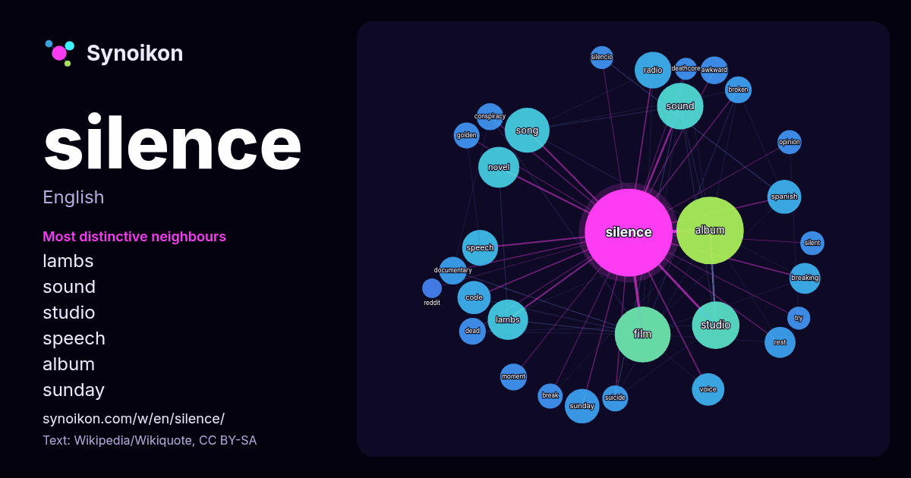

English · word of the day list
silence
The words found around it in 1475 instances from Wikipedia, Wikiquote, Hacker News.

Most distinctive neighbours
- lambs 33×
- sound 26×
- studio 23×
- speech 22×
- album 21×
- sunday 20×
- novel 19×
- breaking 18×
- code 17×
- awkward 17×
- voice 15×
- conspiracy 15×
- spanish 14×
- moment 14×
- radio 13×
- rest 13×
- documentary 13×
- broken 13×
- suicide 13×
- silencio 12×
× = how many times more often than in general Wikipedia text.
Most frequent neighbours
- album 95
- film 65
- studio 47
- sound 45
- song 42
- novel 35
- lambs 34
- american 29
- radio 28
- speech 27
- sunday 25
- spanish 24
- code 23
- french 22
- voice 22
- breaking 20
- music 20
- rest 20
- german 19
- debut 18
In context
- Silence is the absence of ambient audible sound, the emission of sounds of such low intensity that they do not draw attention to themselves, or the state Wikipedia snippets · Silence
- Silence is the lack of audible sound. Silence or The Silence may also refer to: Silence, a district Wikipedia snippets · Silence (disambiguation)
- The Silence of the Lambs or Silence of the Lamb may refer to: The Silence of the Lambs (novel), a 1988 novel by Thomas Harris The Silence of the Lambs Wikipedia snippets · The Silence of the Lambs
- Suicide Silence is an American deathcore band from Riverside, California. The band was established in 2002, and has released seven studio albums, three Wikipedia snippets · Suicide Silence
- "The Sound of Silence" (originally "The Sounds of Silence") is a song by the American folk rock duo Simon & Garfunkel, written by Paul Simon. The duo's Wikipedia snippets · The Sound of Silence
- Dead Silence is a 2007 American supernatural horror film directed by James Wan from a screenplay by Leigh Whannell. It stars Ryan Kwanten, Amber Valletta Wikipedia snippets · Dead Silence
- up radio silence in . Radio Silence may refer to: Radio silence, a status in telecommunications Radio Silence Productions Wikipedia snippets · Radio Silence
- Silence is a 2016 epic historical drama film directed by Martin Scorsese from a screenplay by Jay Cocks and Scorsese. It is based on the 1966 novel by Wikipedia snippets · Silence (2016 film)
More words
- art
- autumn
- bell
- bread
- bridge
- cat
- city
- climate
- clock
- death
- desert
- dog
- family
- food
- forest
- garden
- god
- gold
- health
- heart
- history
- honey
- horse
- island
- language
- life
- map
- mirror
- money
- mother
- mountain
- nature
- power
- rain
- road
- salt
- science
- shadow
- song
- star
- storm
- summer
- tea
- time
- train
- truth
- water
- winter
- work
Precomputed on 2026-10-09 with default settings (±5 words, medium corpus). The interactive map can refresh it with live data.